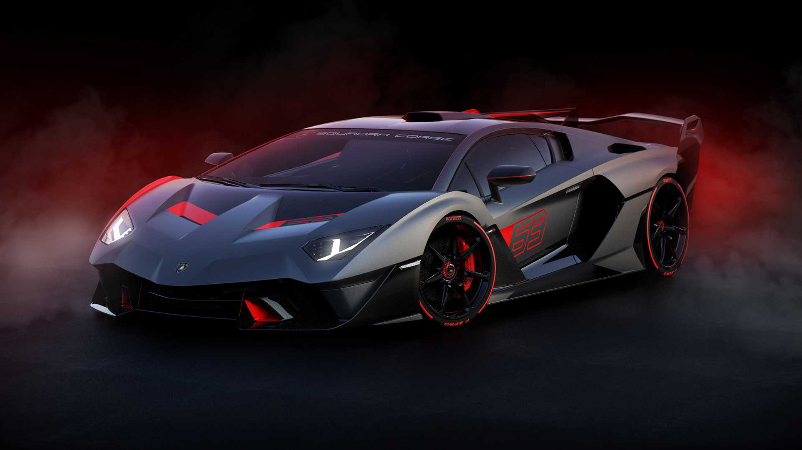

Lamborghini traktörleri
Ferrucio Lamborghini, ikinci dünya savaşından sonra ülkesine döndü vemotosiklet ve otomobil tamirhanesi açtı. Savaştan çıkan İtalya’nın sorunlarını gören Ferrucio Lamborghini, ülkenin kolayca kalkınabilmesi için tarımın kalkınması gerektiğini düşündü. Bunu içinde makineleşme şarttı. Tamirhaneden ve hurdadan aldığı parçaları toplayan ve eksik parçaları kendi üreten Ferrucio Lamborghini ilk traktörünü yaptı. İlk traktörüyle oldukça başarılı sonuçlar alan Ferrucio Lamborghini seri üretime geçti ve aylık 400 adet gibi olağan üstü satış rakamlarına ulaştı.
Lamborghini kuruluyor
Ürettiği traktörler ile başarılı olan Ferrucio Lamborghini merakını farklı bir alana yöneltti, spor arabalara. Garajında döneminin en hızlı modellerini toplayan Ferrucio Lamborghini’yi spor otomobil üretimine yönelten ise Ferrari oldu.
Ferrari 250GT modeline sahip olan Ferrucio Lamborghini, aracının debriyajında sorun yaşamaya başladı. Ferrari’ye sorunu ileten Ferrucio Lamborghini’n aracını Ferrari teknisyenleri tamir edemedi. Bunun üzerine Ferrucio Lamborghini aracı kendi tamir etti ve sorunu iletmek için Enzo Ferrari’den bir görüşme talep etti.
Ferrucio Lamborghini, Enzo Ferrari ile olan görüşmesinde beklemediği bir tavırla karşılaştı. Enzo Ferrari, bir traktör üreticisinin süper spor otomobil üretiminden hiçbir şey anlamayacağını ve herkesin kendi işine bakması gerektiğini söyledi. Bu olaya sinirlenen Ferrucio Lamborghini ise Enzo Ferrari’ye süper spor bir otomobil üreterek cevap verdi.
Lamborghini 350
Bu olaydan sonra Ferrucio Lamborghini yoğun bir çalışma sürecine girdi. Hemen ülkedeki ve dünyadaki en iyi tasarımcıları, motor ustalarını, mühendisleri, kısacası otomobille ilgili tüm en iyileri etrafında topladı. Bütün bu ekip aylarca yoğun bir uğraşın içine girdi ve ilk 12 silindir efsanesini ortaya çıkardılar, Lamborghini 350. Şık, güçlü ve döneminin ilerisinde bir tasarıma sahip olan Lamborghini 350, 1964Torino Otomobil Fuarı’nda tüm dünyaya tanıttı.
Lamborghini hız kesmiyor
Lamborghini 350’nin gösteriminin hemen ardından marka yeni modelinin çalışmalarına başladı ve ilk modelden bir yıl sonra, 1965 Torino Otomobil Fuarı’nda yeni modelini dünyaya tanıttı, Lamborghini Miura. Markanın en önemli modelleri arasında yer alan Miura, Lamborghini’nin tüm dünyaya kısa bir sürede yayılmasında önemli yer oynadı.
